Selected to participate in the prestigious European Talent Academy 2026. This initiative aims to improve collaborations between universities (Imperial College London, Technical University of Munich (TUM), and Politecnico di Milano (PoliMi)) and to support career progression by providing networking, leadership development, and training opportunities, along with funding support.
Excited to begin my MSCA Postdoctoral Fellowship on "CASREx: Cable-driven Arm Soft Re-configurable Exoskeleton for Muscle Impairment Rehabilitation" under the supervision of Prof. Thrishantha Nanayakkara at the Morph Lab, Dyson School of Engineering, Imperial College London. This 24-month highly prestigious fellowship is funded by Horizon Europe.
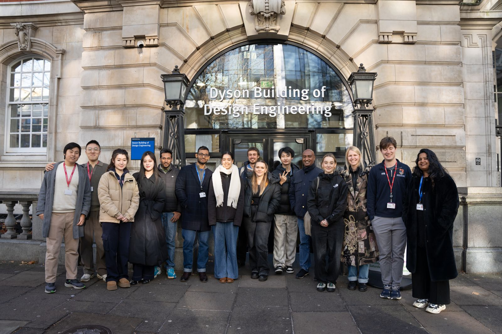
Our paper "RTFF: Random-to-Target Fabric Flattening Policy Using Dual-Arm Manipulator" has been submitted to the IEEE International Conference on Robotics and Automation (ICRA) 2026. This work focuses on automated fabric manipulation using dual-arm robotic systems. [arXiv] [Project Website] [Video]
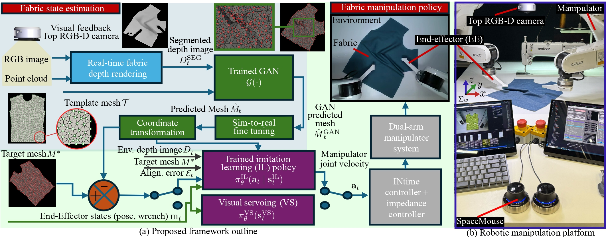
Invited Speaker at the World Robotics Conference (WRC 2025), Beijing, China. Presented research on "Fabric modeling and perception for garment manufacturing," exploring robotics and AI solutions for fabric representation, simulation, and real-world applications.
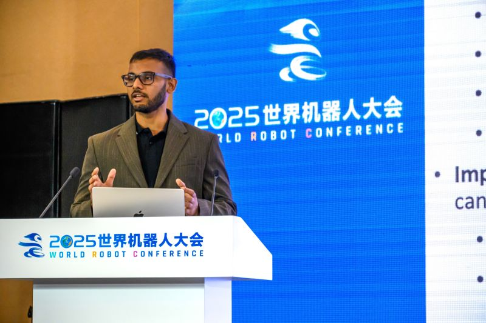
Organized and presented at the Workshop on Robotics for Automated Garment Production at IEEE International Conference on Mechatronics and Automation (ICMA 2025), Beijing Empark Grand Hotel, Beijing, China. Presentation topic: "Mesh-based Fabric State Estimation and Manipulation."
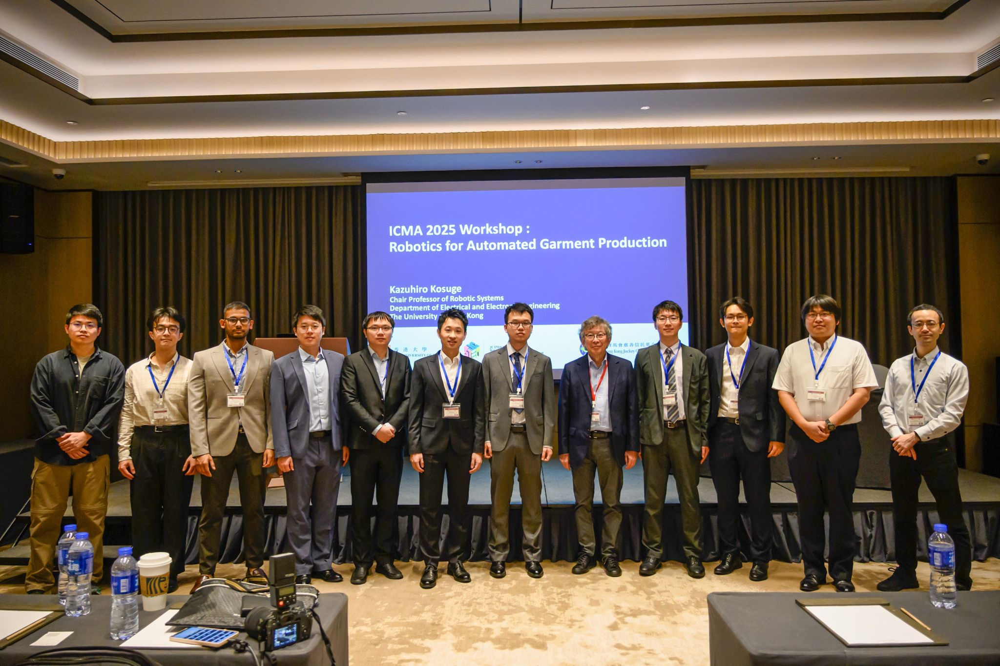
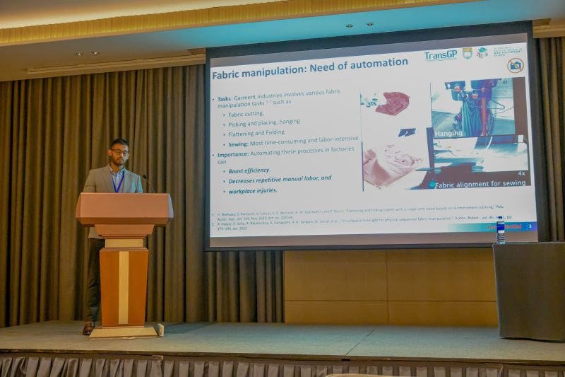
Recipient of the prestigious Marie Skłodowska-Curie Postdoctoral Fellowship for the project "CASREx" (Grant No. 101205678) hosted at Imperial College London. The fellowship is funded under HORIZON-MSCA-2024-PF-01-01 for 24 months (EUR 276,187.92).
Co-authored Innovation and Technology Fund (ITF) Partnership Research Program (PRP) grant for collaborative research initiatives in Hong Kong.
Presented poster at the IEEE International Conference on Robotics and Automation (ICRA) 2023, ExCeL London, United Kingdom. One of the premier robotics conferences showcasing cutting-edge research in robotics and automation.

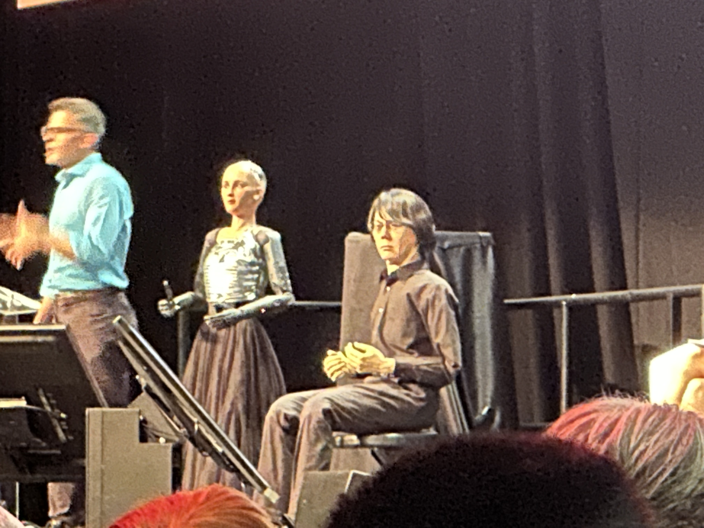
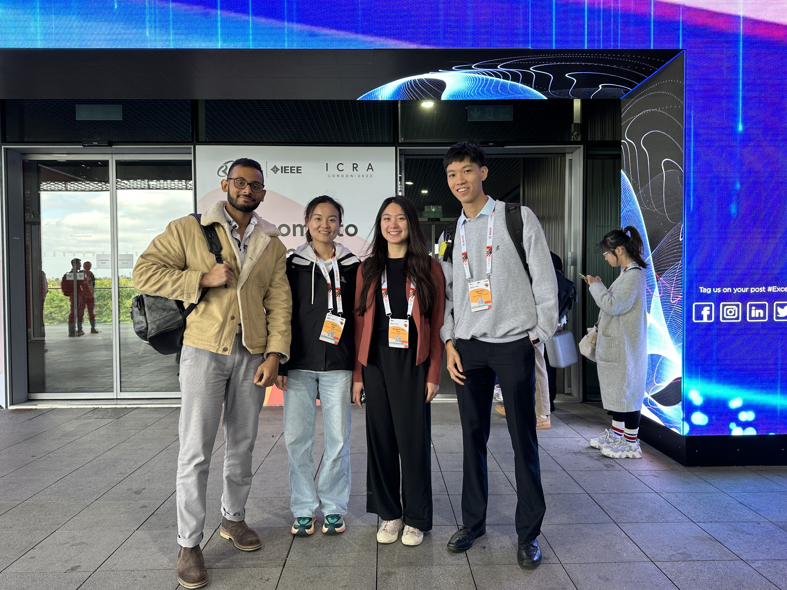
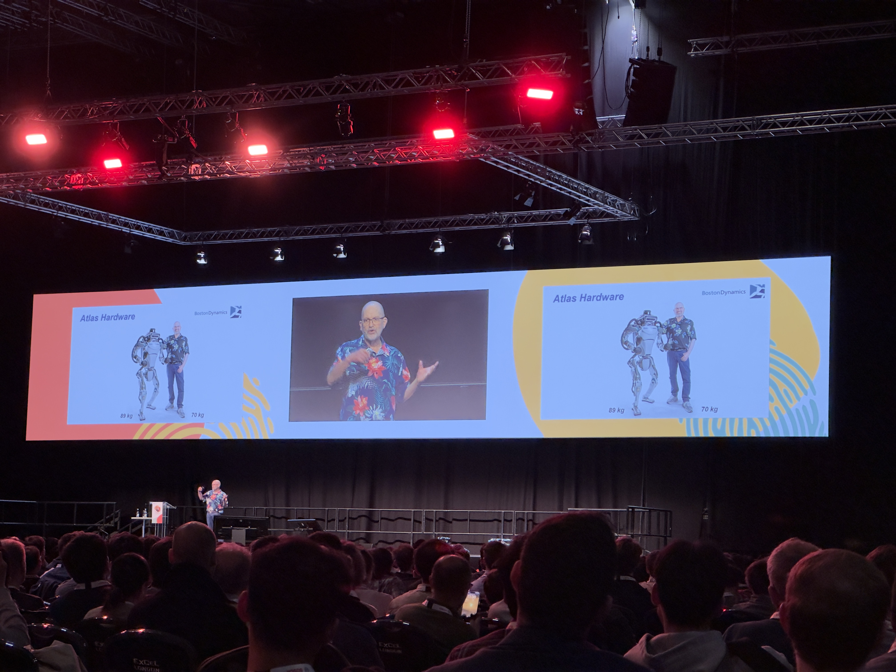
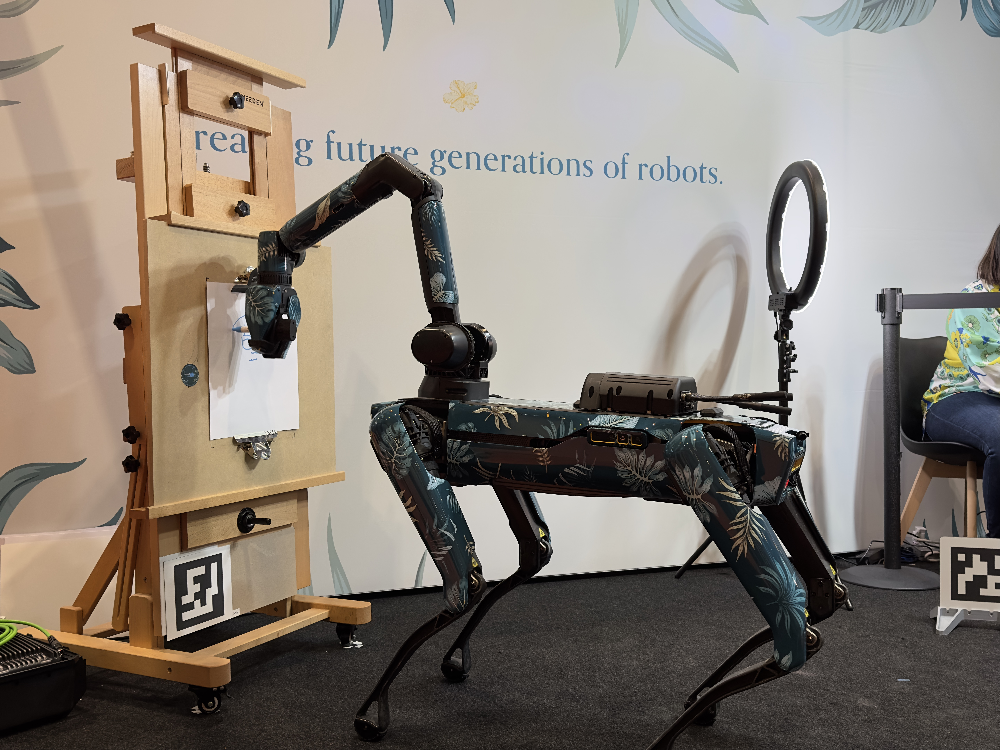
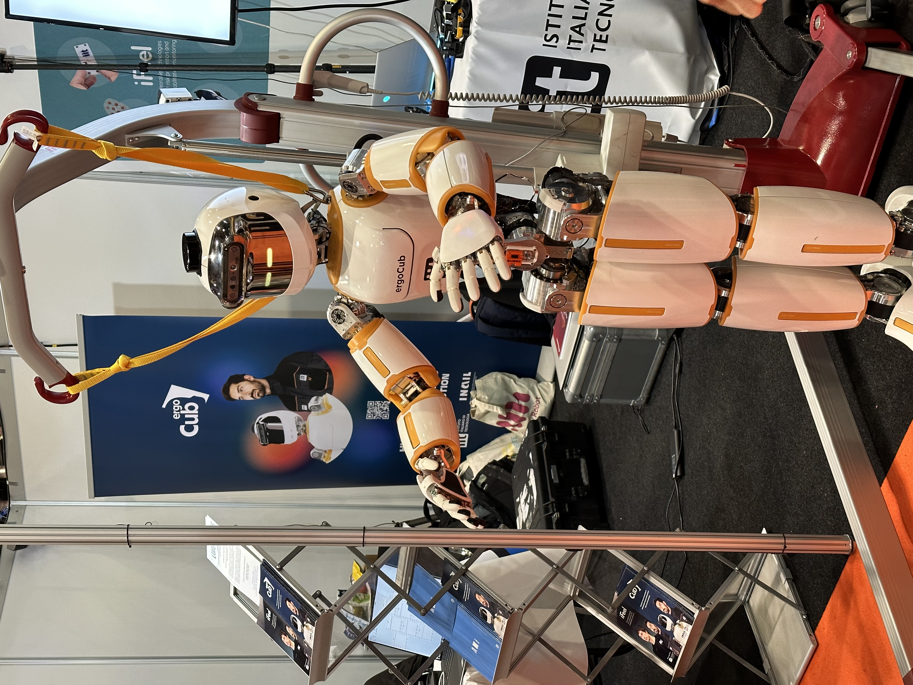
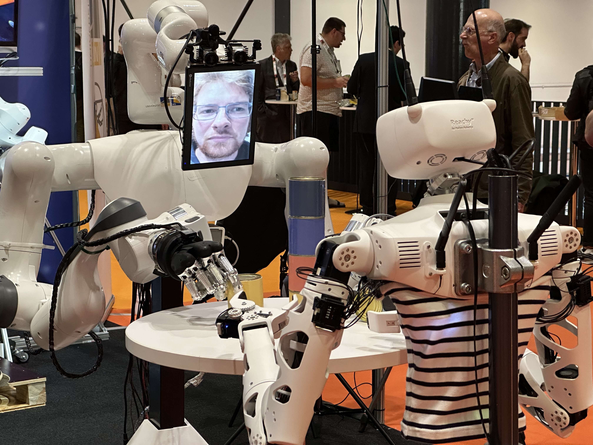
Co-authored Research Talent Hub for ITF project (RTH-ITF) grant supporting research talent development in Hong Kong.
Recipient of research grant for "Dynamic testing of implant stents using Robotic Soft Esophagus (RoSE)" from BvW Holding, Cham, Switzerland (39,000 NZD, 1 year).
Recipient of Riddet Travel grants from Riddet Institute Centre of Research Excellence (3,000 NZD).
Recipient of Doctor of Philosophy Scholarship from University of Auckland.
Recipient of Doctor of Philosophy Scholarship from Riddet Institute Centre of Research Excellence.
Recipient of Masters of Technology Scholarship from Ministry of Human Resource (MHRD) GATE scholarship.
B. Jin*, A. Kobayashi*, D. Bhattacharya, A. Seino, F. Tokuda, N.C. Tien, and K. Kosuge (2025). "Automated Straight-line Sewing of Stretchable Fabrics with Different Lengths". IEEE Robotics and Automation Letters, pp. 1-8. (*Equal contribution) [Link] [Video]
D. Bhattacharya, T. K. Cheung, Y. Wang, and D. Lau (2025). "Kinematic and Dynamic Modeling of Cable-Object Interference and Wrapping in Complex Geometrical-Shaped Cable-Driven Parallel Robots". Mechanism and Machine Theory, vol. 214, pp. 106092. [Link] [GitHub] [Video]
W. Dong, D. Bhattacharya, A. Kobayashi, A. Seino, F. Tokuda, X. Huang, K. Tang, N.C. Tien, and K. Kosuge (2025). "Precise Top-layer Fabric Segmentation for Fabric Destacking with Edge- and Shape-Aware Deep Networks". IEEE International Conference on Mechatronics and Automation (ICMA), pp. 1343-1348.
Visiting Research Associate in the Department of Electrical and Electronic Engineering at Hong Kong University (HKU), conducting research on advanced robotics and control systems.
Served as Senior Research Engineer and Postdoctoral Fellow at the Center for Transformative Garment Production (TransGP) under Prof. Kazuhiro Kosuge. Led multidisciplinary teams developing high-performance models for fabric pre-sewing handling and folding, focusing on physics-based cloth manipulation with policy generated from imitation learning.
Delivered lectures for postgraduate course MAEG5090 Topics in Robotics at The Chinese University of Hong Kong. Class strength: 50 students. Covered advanced topics in robotics including cable-driven parallel robots, soft robotics, and robotic control systems.
Postdoctoral Fellow in the Department of Mechanical and Automation Engineering under Prof. Darwin Lau. Conducted research on modeling and control of cable-driven robots with cable wrapping around obstacles and links, and designed cable-driven growing vine robots for safer false ceiling inspections. Mentored undergraduate and postgraduate students and delivered lectures for MAEG5090 Topics in Robotics.
Visiting Postdoctoral Fellow in Laboratoire des Sciences du Numérique de Nantes (LS2N), École Centrale de Nantes (ECN). Supervisors: Prof. Stephane Caro and Prof. Darwin Lau. Project: Iterative-learning control of cable-driven parallel robot.
Pursued Ph.D. in Mechatronics Engineering at The University of Auckland, New Zealand. Research focus: "Robotic Soft Esophagus Design, Modeling, and Control for Endoprosthetic Stent Testing and Food Swallow Investigation". Supervisors: Prof. Weiliang Xu, Prof. Leo K. Cheng, and Dr. Stefan Dirven. Developed innovative soft robotic systems for medical applications, advancing the field of bio-inspired robotics and control systems.
Graduate Teaching Assistant for undergraduate courses at The University of Auckland. Courses taught:
• MECHENG 706: Mechatronics Design Project (2017-2019) - 4th year, 30 students
• MECHENG 306: Design of Sensing and Actuating Systems (2018) - 3rd year, 30 students
• ENGGEN 115: Principles of Engineering Design (2017-2019) - 1st year, 60 students
• ENGGEN 131: Introduction to Engineering Computation (2018-2019) - 1st year, 60 students
Responsibilities included supervising undergraduate students for problem solving, delivering tutorial sessions and workshops, managing laboratories, and conducting weekly interviews to monitor students' progress in design projects.
Successfully defended PhD thesis titled "Robotic Soft Esophagus Design, Modeling, and Control for Endoprosthetic Stent Testing and Food Swallow Investigation" in Mechatronics Engineering at The University of Auckland. [Thesis]
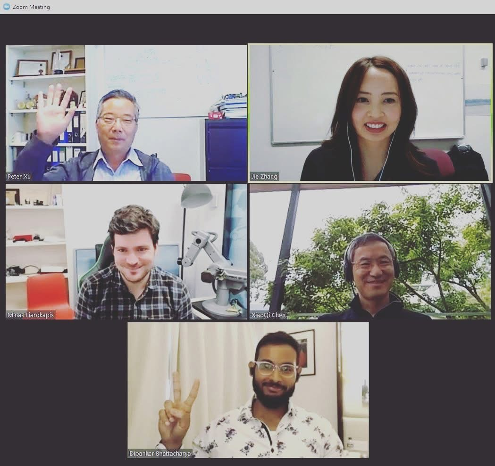
Performed characterization experiments for SoGut: A Soft Robotic Gastric Simulator at North Shore Hospital, Auckland, as part of collaborative research during PhD studies at The University of Auckland.
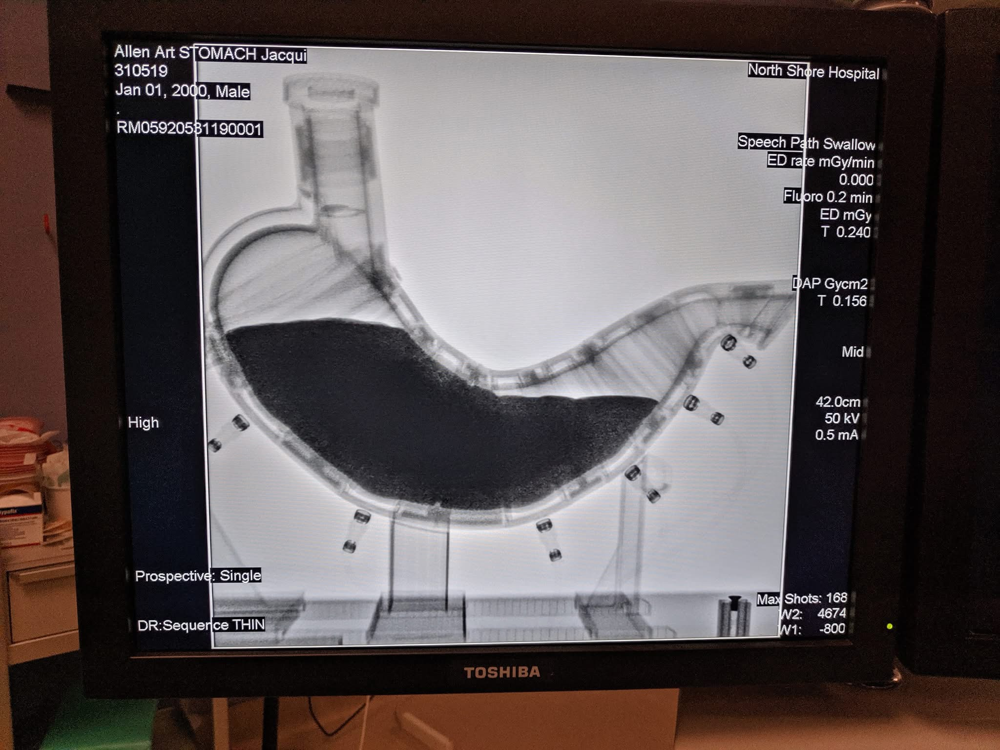
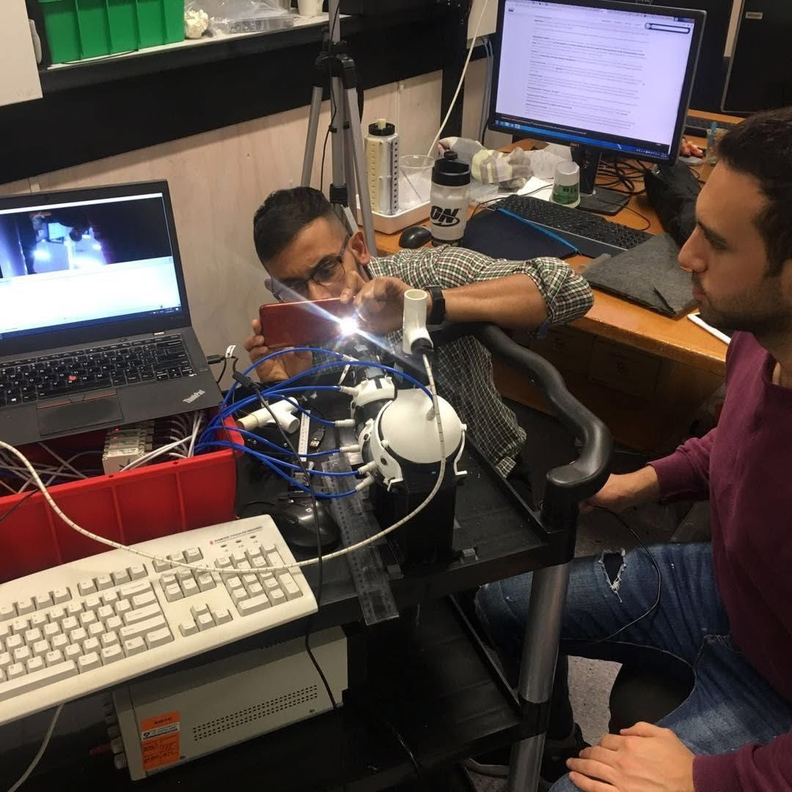
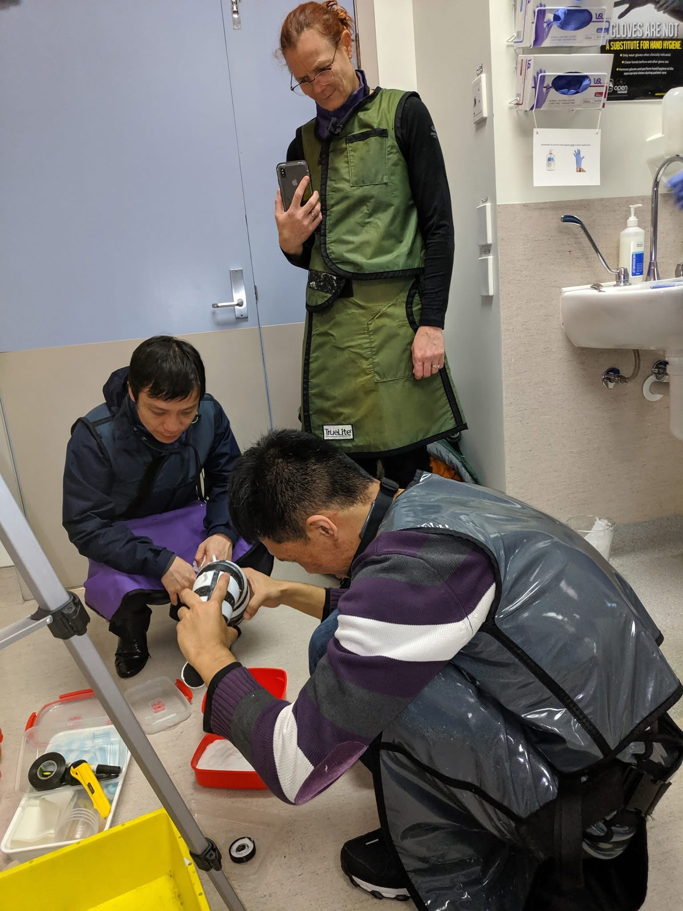
Presented research work at the BioMouth 2018 Meet, Auckland, New Zealand.
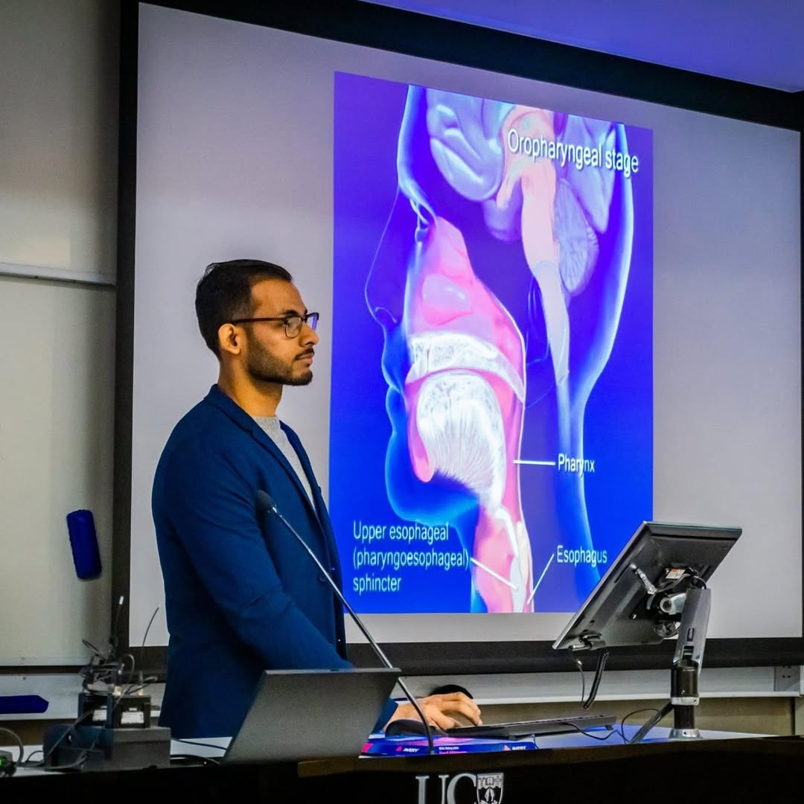
D. Bhattacharya, Y. P. Chan, S. Shang, Y. S. Chan, Y. Tan, and D. Lau (2023). "Tri-Space Operational Control of Redundant Multilink and Hybrid Cable-Driven Parallel Robots Using an Iterative-Learning based Reactive Approach". IEEE Transactions on Control Systems and Technology. [Link]
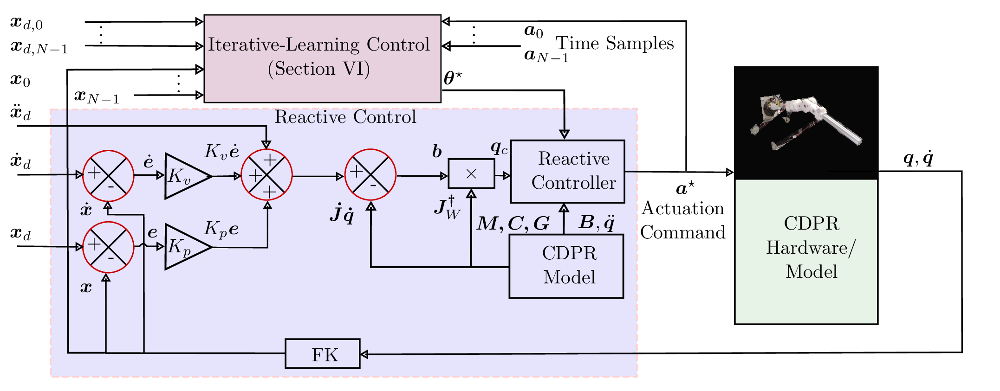
D. Bhattacharya, L. K. Cheng, and W. Xu (2021). "Nonlinear Model Predictive Control of a Robotic Soft Esophagus for Endoprosthetic Stent Testing". IEEE Transactions on Industrial Electronics. [Link]
D. Bhattacharya, S. Jesna, L. K. Cheng, and W. Xu (2021). "RoSE: A Robotic Soft Esophagus for Endoprosthetic Stent Testing". Soft Robotics. [Link]
Y. Dang, Y. Liu, R. Hashem, D. Bhattacharya, J. Allen, M. Stommel, L.K. Cheng, and W. Xu (2021). "SoGut: A Soft Robotic Gastric Simulator". Soft Robotics. [Link]
D. Bhattacharya, L. K. Cheng, and W. Xu (2020). "Sparse Machine Learning Discovery of Dynamic Differential Equation of an Esophageal Swallowing Robot". IEEE Transactions on Industrial Electronics, vol. 67, no. 6, pp. 4711–4720. [Link]
D. Bhattacharya, L.K. Cheng, S. Dirven, and W. Xu (2019). "Artificial Intelligence Approach to the Trajectory Generation and Dynamics of a Soft Robotic Swallowing Simulator". Robot Intelligence Technology and Applications (RITA) 5, vol. 751, pp. 3-16, Springer. [Link]
D. Bhattacharya, L.K. Cheng, and W. Xu (2018). "Testing and Analysis of Migration Displacement of a Flared Stent Deployed in an Esophageal Swallowing Robot". 25th International Conference on Mechatronics and Machine Vision in Practice (M2VIP), pp. 1-6. [Link]
D. Bhattacharya, L.K. Cheng, S. Dirven, and W. Xu (2017). "Actuation Planning and Modeling of a Soft Swallowing Robot". 24th International Conference on Mechatronics and Machine Vision in Practice (M2VIP), pp. 1-6. [Link]
Recipient of Best Conference Paper Award at the 5th International Conference on Robotic Intelligence Technology and Applications (RiTA), Daejeon, Korea.
Ranked 2nd in poster presentation at the Delivery of Functionality in Complex Food Systems (DoF 2017) Conference.
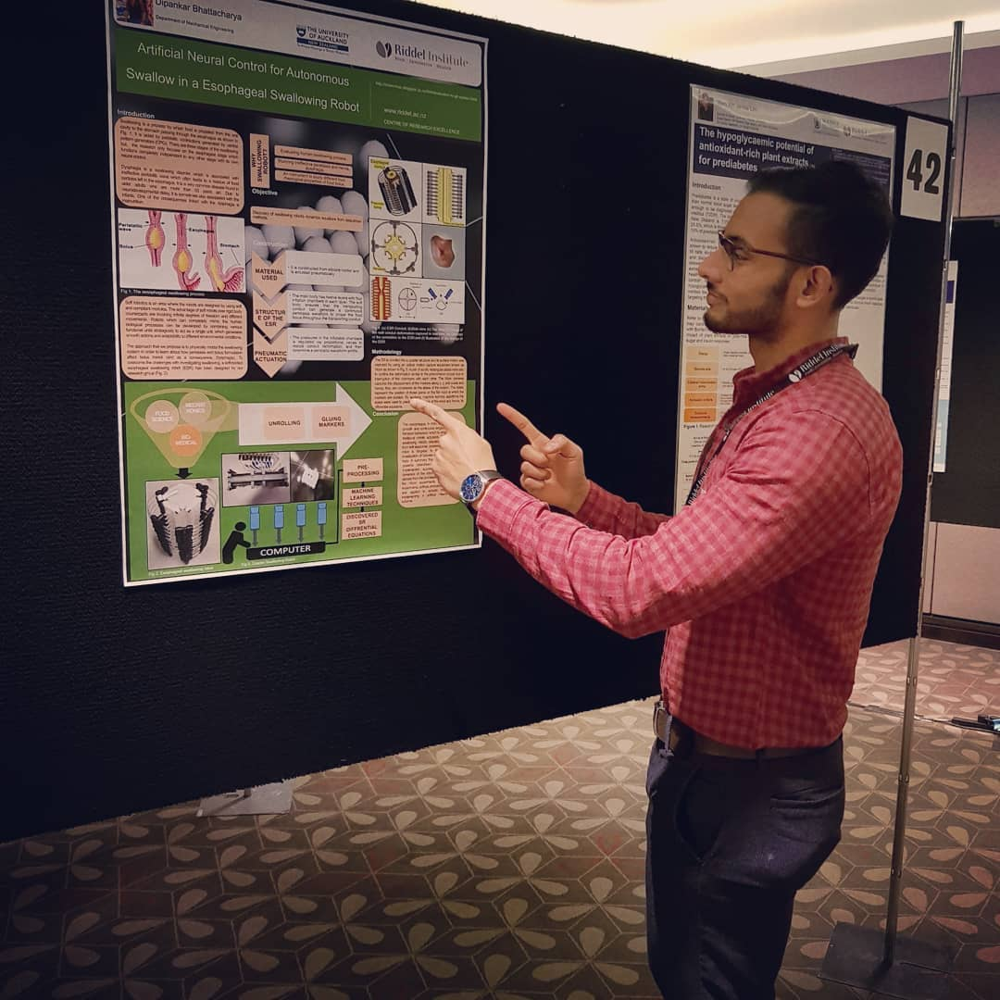
D. Bhattacharya, M.G. Nisha, and G.N. Pillai (2015). "Relevance Vector-Machine-Based Solar Cell Model". International Journal of Sustainable Energy, vol. 34, no. 10, pp. 685-692. [Link]
Research Assistant under the direction of Prof. Peter Xu, working on measuring stent migration for esophageal stents of various designs, developing actuation protocols for soft-esophageal robots, and conducting experimental validation studies.
Delivered lectures for undergraduate and postgraduate courses at Galgotia's University, School of Electrical, Electronics and Communication Engineering. Courses taught:
• BECE2010: Digital Electronics - 2nd year undergraduate, 60 students
• BECE2016: Signals and Systems - 2nd year undergraduate, 60 students
• BTEE2002: Network Analysis and Synthesis - 2nd year undergraduate, 60 students
• BEEE3002: Control Systems - 3rd year undergraduate, 60 students
• BEEE2001: Electrical Measurement and Instrumentation - 2nd year undergraduate, 60 students
• BECE3020: Digital Signal Processing - 3rd year undergraduate, 60 students
• BTEE3019: Advanced Control System - 3rd year undergraduate, 60 students
• BEEE5004: Digital Control - 1st year postgraduate, 20 students
Responsibilities included developing teaching materials, supervising final year undergraduate projects, and managing laboratory sessions.
Lecturer (Assistant Professor Grade-1) in School of Electrical, Electronics and Communication Engineering (SEECE). Delivered lectures for undergraduate and postgraduate courses, developed teaching materials, supervised final year undergraduate projects, and managed laboratory sessions.
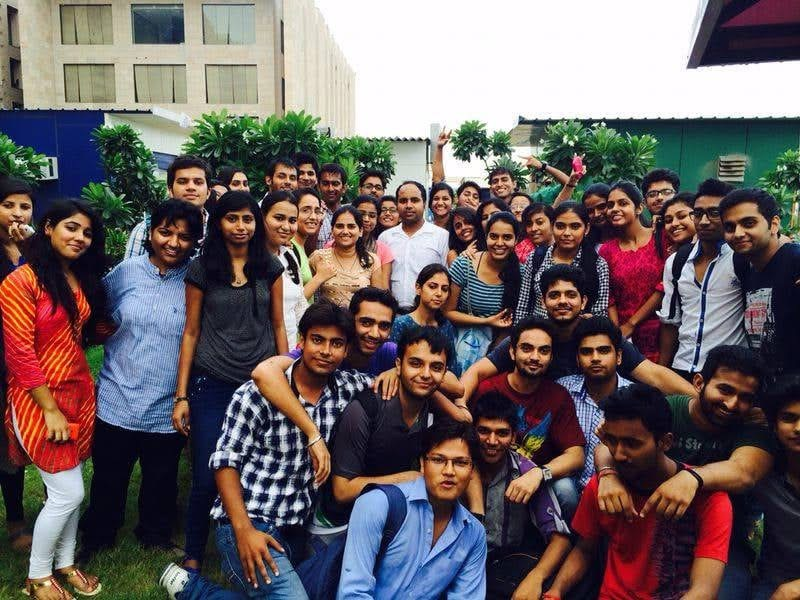
Pursued Masters of Technology (M.Tech) in Systems and Control Engineering at Indian Institute of Technology (IIT) Roorkee. Research focus: Advanced control systems and automation. Thesis: "Relevance Vector Machine-based Solar Cell Modeling". Recipient of Ministry of Human Resource Development (MHRD) GATE scholarship. Developed strong foundation in control theory, system modeling, and optimization techniques.
Pursued Bachelor of Technology (B.Tech) in Electronics and Communication Engineering at North Eastern Regional Institute of Science and Technology (NERIST), Arunachal Pradesh. Project: "Implementation of Direct Torque Control (DTC) for Induction Motor". Built comprehensive knowledge in electronics, communication systems, signal processing, and embedded systems. Participated in National Service Scheme (NSS) activities including blood donation camps and community service.